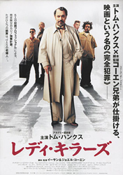
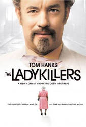
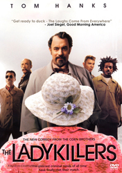
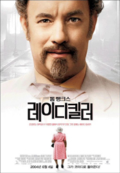
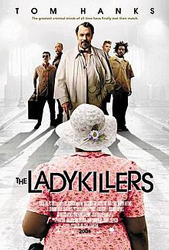

Tom Hanks
Irma P. Hall
Marlon Wayans
J. K. Simmons
Tzi Ma
Ryan Hurst
Diane Delano
George Wallace
Stephen Root
Jason Weaver
Greg Grunberg
Blake Clark
Jeremy Suarez
Roger Deakins
A remake of the 1955 comedy, the story revolves around an eccentric but charming Southern professor, who puts together a group of thieves to rob a casino. They rent a room in an old woman's house - an unsuspecting but sharp old landlady - but soon she discovers the plot and they must kill her, a task that is more difficult than it seems.
The Coens' screenplay was based on the 1955 British Ealing comedy film of the same name, written by William Rose. This was the first film in which both Joel and Ethan Coen share producing and directing credits; previously Joel had always been credited as director and Ethan as producer.
At one point the film was to have been directed by Barry Sonnenfeld, the Coens' former cinematographer. The Coens were originally commissioned to write the screenplay only. When Sonnenfeld backed out, the Coens were eventually hired as directors, with Sonnenfeld retaining a producer credit.
In the sequence where the gang begins to dump the corpses into the river to dispose of them, a garbage barge catches each fallen robber as he falls from the bridge, replacing the goods train used in the original 1955 British film classic.
Prior to filming, Tom Hanks had not seen The Ladykillers (1955), as he did not want it to prejudice the way he acted in the remake.
The gag of the portrait changing expressions is taken from Preston Sturges' film Sullivan's Travels (1941). In an early adventure, Sullivan (Joel McCrea) escapes the advances of a sexually aggressive widow (Almira Sessions) by making a rope out of his bed sheet. The portrait of the late husband is duly shocked. In the original The Ladykillers, a photograph of the late captain "at the salute" is seen. Two of the Coens' previous films, Intolerable Cruelty and O Brother, Where Art Thou?, were also heavily influenced by Sturges.




